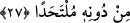

dizginlenmesinde bizim tedbîrimiz sana yeterdi ve rahat ederdin.”
Allah, fazlı ile bizi ve sizi böyle olanlardan eylesin. Bu söz, ancak aradan nefisle
münâzaayı kaldıran seçkin büyüklerin ulaşabileceği yüce bir sözdür. Yine bu söze ancak
teslimiyet ve rıza yolunda olanlar ulaşır.
Ey kişi, zamanımızda böyle seçkin insanlar nerede! Onların durumunu insanlar nasıl
bilecek! Buna rağmen sen yine de çalış, umulur ki onlardan birisini bulursun da Allah’ın
râzı olduğu bahtiyarlardan birisi olursun.
27.
Rabbinin
Kitabı’ndan
sana
vahyedileni
oku.
Onun
kelimelerini
değiştirebilecek yoktur. O’ndan başka bir sığınak da bulamazsın.
Kur’ân’ı tilâvet etmek, gereği ile amel etmek ve esrârına muttali olmak sûretiyle
Allah’a yaklaşmak için “Rabb’inin Kitabı’ndan,” Kur’an’dan “sana vahyedileni
oku.” “Bundan başka bir Kur’an getir veya onu değiştir.” (Yûnus, 10/15) diyenlerin
sözlerine kulak asma.
Tilâvet ile kırâat arasındaki fark şudur: Tilâvet, Kur’ân’ı ders ve üzerine vazife
olarak alınan evrâd gibi sürekli okumaktır. Kırâat ise daha umûmidir. Çünkü o harfleri
bir araya getirerek telaffuz etmektir ve bunda süreklilik şartı da yoktur.
“Onun kelimelerini değiştirebilecek yoktur.” Yâni tebdil ve tağyire Allah’tan başka
hiç kimsenin gücü yetmez. Nitekim O, bu hususta şöyle buyurmuştur: “Biz bir âyetin
yerine başka bir âyet getirdiğimiz zaman Allah ne indirdiğini bilirken; “Sen
(Allah’a) iftira ediyorsun (bu sözleri kendin uydurup Allah’a atıyorsun)” derler.
Hayır, onların çokları bilmiyorlar.” (Nahl 16/101)
Ne kadar ararsan ara üzerinize bir bela indirdiği vakit de “O’ndan başka bir sığınak
da” ebediyyen “bulamazsın.”
Şeyh, tefsirinde der ki: “Faraza onu (Kur’ân’ı) değiştirmeye yeltenirsen, Allah’ın
azâbından kurtulmak için bir sığınak bulamazsın.”
Bil ki Kur’an ebediyyen değiştirilemez. Ona herhangi bir ilave yaparak ya da
eksilterek bozmak da sonsuza kadar mümkün olmayacaktır. Keza bu değişmezlik onun
hükümleri için de geçerlidir. Çünkü o, nazmı ve mânâsı ile birlikte gönüllerdedir.
Ancak asırların değişmesiyle sadece onun ehli değişir. İlim ve amel cehâlete ve terke
dönüşür. Bundan Allah Teâlâ’ya sığınırız.
İbrahim Edhem (r.h.) şöyle demiştir: “Bir gün üzerinde “beni çevir ki sana faydam
dokunsun.” yazan bir taşa rastladım. Onu çevirdim, üzerinde şöyle yazıyordu: “Sen